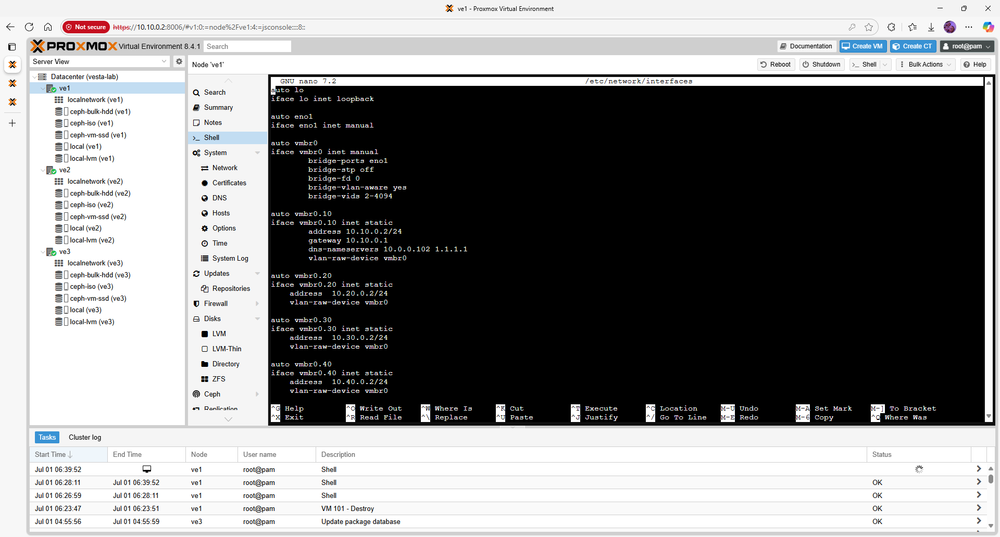
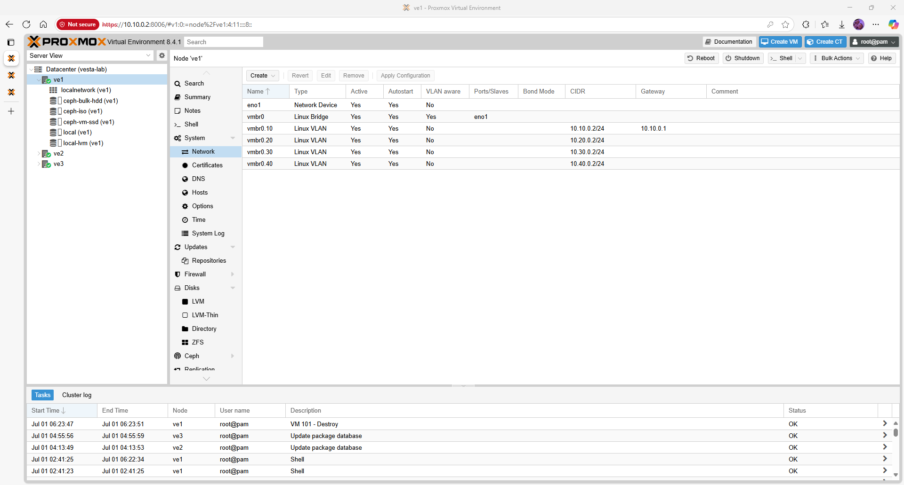
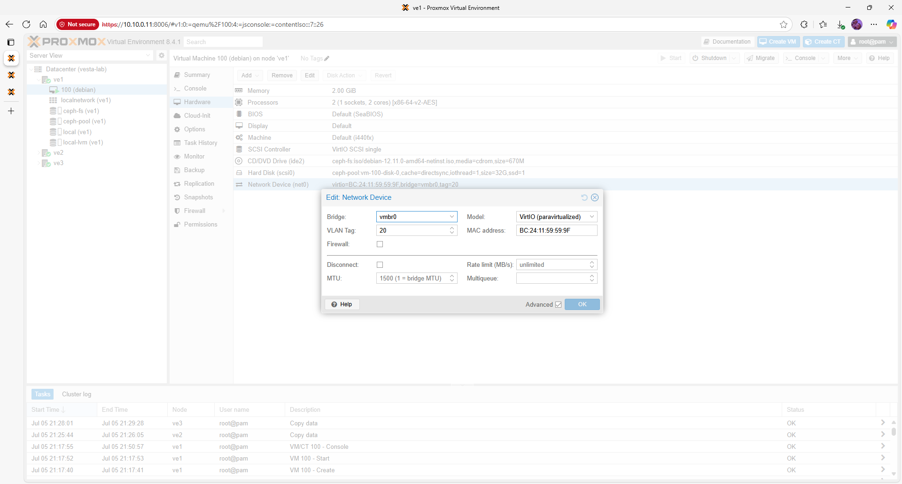
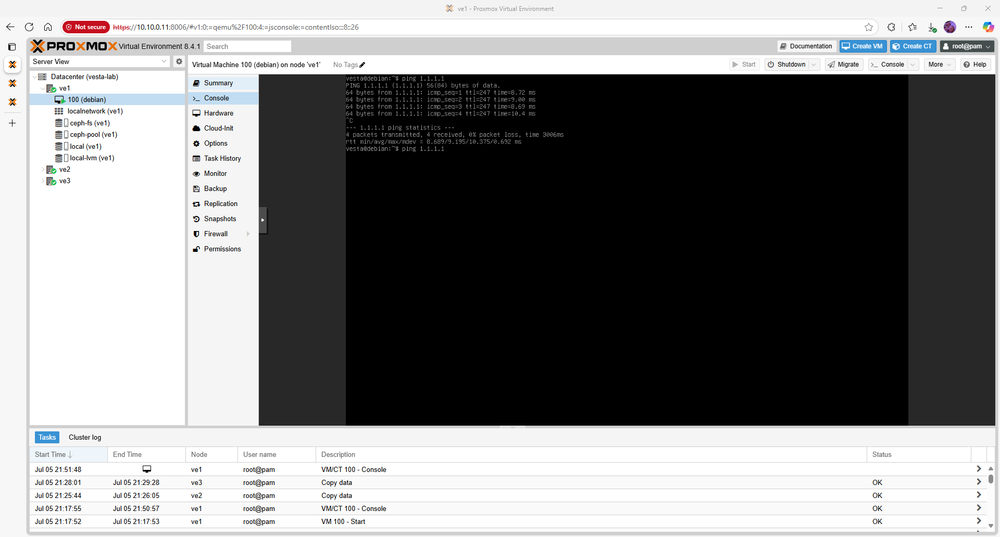

Proxmox VE 8.4.1 – Networking (Bare‑Metal)
This page describes how to configure bridges and VLAN tagging on each Proxmox host. A consistent network layout is critical for cluster communication and Ceph traffic.
Quick‑view topology / matrix
| VLAN ID | Name | Purpose | CIDR |
|---|---|---|---|
| 10 | mgmt | Proxmox GUI / SSH | 10.10.0.0/24 |
| 20 | services | Guest VM/LXC networks | 10.20.0.0/24 |
| 30 | cluster | Corosync & Ceph replication | 10.30.0.0/24 |
| 40 | backups | Backup traffic | 10.40.0.0/24 |
Prerequisites
- Ensure your physical switches trunk all required VLANs to the Proxmox hosts. Untagged (native) VLAN 10 is used for management in this example.
- Identify the network interface name connected to your switch (e.g.
eno1oreth0). You can list interfaces withip link. - Decide which VLANs will carry Ceph and cluster traffic; high‑throughput networks benefit from jumbo frames (MTU 9000).
Step 1 – Create a VLAN‑aware Bridge
Edit /etc/network/interfaces on each node and create a Linux bridge named vmbr0 that attaches to your physical NIC. Enable VLAN‑aware mode so that sub‑interfaces can be defined on top:
auto lo
iface lo inet loopback
auto eno1
iface eno1 inet manual
auto vmbr0
iface vmbr0 inet manual
bridge‑ports eno1
bridge‑stp off
bridge‑fd 0
bridge‑vlan‑aware yes
bridge‑vids 2‑4094
This defines a bare bridge without any IP address. The bridge‑vlan‑aware flag allows us to tag VLANs on the bridge directly. After saving, restart the networking service or reboot to apply changes.


Step 2 – Define VLAN Subinterfaces
For each VLAN, create a logical interface on vmbr0 with a .VLAN_ID suffix and assign an IP address if needed. Below is an example for the management network. Repeat the stanza for other VLANs, changing the VLAN ID and IP accordingly:
auto vmbr0.10
iface vmbr0.10 inet static
address 10.10.0.11/24
gateway 10.10.0.1
dns‑servers 10.0.0.102 1.1.1.1
vlan‑raw‑device vmbr0
Replace 10.10.0.11 with the correct IP for each node. For VLANs used exclusively for Ceph or cluster traffic, omit the gateway line since they are non‑routed subnets.
Below is a screenshot of the VLAN‑tagged interface configuration in the Proxmox GUI:

GUI configuration
If you prefer the web interface, navigate to Datacenter → Node → Network and click Create → Linux Bridge. Enter vmbr0 as the name, select your NIC (e.g. eno1) and tick VLAN aware. Next, create VLANs by clicking Add → Linux VLAN, choose the bridge, and enter the VLAN ID and IP settings.
| Menu path | Action | Purpose |
|---|---|---|
| Datacenter → Node → Network → Create Bridge | Create vmbr0 with VLAN awareness |
Base bridge for all tagged networks |
| Datacenter → Node → Network → Add VLAN | Add vmbr0.10, vmbr0.20, etc. |
Define per‑VLAN interfaces and IP addresses |
| Datacenter → Node → Network → Reboot required | Apply changes | Restart services to apply network changes |
Step 3 – Validate Connectivity
After applying the configuration, verify network connectivity:
ip addr show vmbr0
ip addr show vmbr0.10
ping -c3 10.10.0.12
ping -c3 10.30.0.3
All nodes should be reachable on the management and cluster VLANs. Use ip link to check the MTU; set it to 9000 on both the host NIC and switch if jumbo frames are desired.

Troubleshooting
- If
bridge‑vlan‑awareis not enabled, tagged interfaces (vmbr0.10) will not forward traffic. Recheck the configuration and restart networking. - Ensure the trunk ports on the switch allow all required VLANs and that native VLANs are correctly set.
- For Ceph and Corosync, avoid mixing MTU sizes on different paths. Use
ip link set dev <iface> mtu <value>to adjust.
Next steps / Links
With networking configured, proceed to the Cluster Setup page to form a three‑node Proxmox cluster. For Ceph storage configuration, see the Ceph Storage guide.